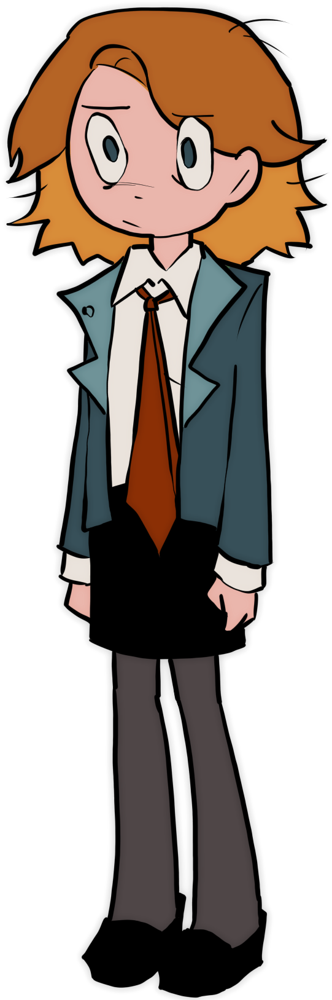
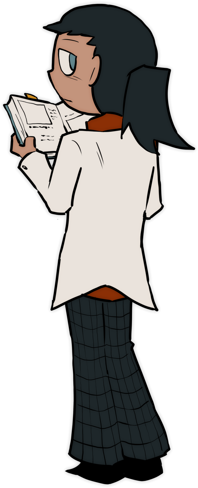

Ashley Dobrik attempts to commit suicide but is prevented by getting stuck in a time loop. In order to get out she must solve a series of crimes. Her only frame of reference being her notebook, which is mysteriously unaffected by the time loop.
These comics are just small side stories I made during my free time.
A senior highschool student who's 3 years younger than her class. Ever since her mother killed herself, she has been living under the care of her aunt. Lately she's been struggling to keep up with her classmates and copes by writting in a diary.
Isn't in speaking terms with her sister, partly because she hated her but mostly because she's currently dead. She never intended to have a child but loves Ashley to death.
A Social buttery and Ashley's... best friend? It's hard to tell sometimes. She's a bit ditzy but she means well. Always giving out questionable advice, often rooted with her obsession of Noir literature.
Intelligent but incredibly distant. Doesn't talk beyond what she thinks is necessary but still a sister figure to Ashley. She wanted to become a doctor because of her mother, not that it matters much anymore.
Vocal of her passion of the performing arts and an extreme clutz. She often wonders if she should of been more academically inclined like her twin sister, Sunny.
This comic is still getting worked on but I wanted to make some character descriptions for the fun of it. Hopefully I can get it finished next year but, as per usual, please don't expect much.